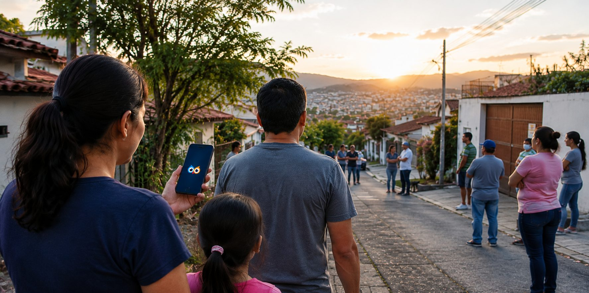

Emergencias
Cuando hay vida en peligro o una situación grave. Se elige la situación y se emite en un toque, sin escribir nada.
- Asalto, intruso, incendio, inundación
- Violencia doméstica, persona herida
- Llega en pantalla completa a la colonia

Alerta Barrio es la plataforma de comunicación, prevención y colaboración comunitaria entre vecinos — segmentada por colonia, ciudad y país, con espacio para que instituciones y empresas registradas publiquen sus propios avisos.
Red vecinal de seguridad
Vecinos, instituciones gubernamentales y empresas conectados en tiempo real. Cada mensaje llega directo a la colonia correcta.
En pruebas cerradas en Google Play · iOS próximamente
Alcance
Todos los barrios y colonias viven en una misma app, organizados por país, ciudad y zona. Cada alerta, aviso o promoción llega directamente a las zonas que elijas, y nadie recibe ruido de otras partes.
Tipos de alerta
El color anticipa la urgencia antes de leer una sola palabra.
Cuando hay vida en peligro o una situación grave. Se elige la situación y se emite en un toque, sin escribir nada.
Situaciones menos graves que conviene conocer a tiempo.
Avisos oficiales, cortes de servicio y alertas de riesgo, solo en las zonas donde la institución tiene cobertura.
Promociones, avisos de servicio y novedades de las empresas que el vecino sí quiere seguir.
Una publicación con fotos, descripción y recompensa opcional. Todo el barrio ayuda a encontrar.
Un vecino reporta un problema de su ciudad, como basura tirada o daños en la calle, y el reporte llega a la institución correspondiente.
Así funciona
Una lista de situaciones reales: asalto, incendio, persona sospechosa y más.
Fotos, video y descripción son opcionales. Con solo la situación ya se puede enviar.
Aparece en pantalla completa a cada vecino de la colonia, con una foto y el resumen.
Abre el muro de alertas con la publicación completa, comentarios y reacciones.
La app
Un menú simple, como las redes sociales que ya conoces. Un botón flotante te deja emitir cualquier alerta desde cualquier pantalla.
La página principal, en tema oscuro. Un radar muestra la actividad de tu zona y las categorías se ordenan en una cuadrícula con imágenes reales.
El muro comunitario, igual que una red social. Publica, comenta, responde y comparte fotos con tu colonia.
Dos secciones en una pestaña, con un selector arriba.
Mensajes privados con nombres reales, para que cualquier abuso se pueda identificar y reportar.
Sencillo y bonito. Foto, nombre y las opciones de tu cuenta.
Entras como en WhatsApp: eliges tu país, escribes tu número y confirmas con un código por mensaje.
Más herramientas
Hasta 3 personas con la app. Si estás fuera de tu zona y tienes una emergencia, la alerta roja les llega solo a ellos.
En “Ayuda a encontrar” puedes ofrecer una recompensa en la moneda de tu país.
Una bolsa de servicios y empleo. Los vecinos piden, otros ofrecen, y la confianza viene de las reseñas de la comunidad.
Puedes silenciar a una empresa o institución. No recibes su notificación, solo ves el indicador.
Instituciones gubernamentales y empresas
Cada institución, empresa o patrocinador tiene su propio panel, creado y validado por el equipo de Alerta Barrio. Entra con su número y llega directo al panel.
Alcance elegido para una publicación
Cómo se ve el rendimiento (valores de ejemplo)
Seguridad y confianza
Nadie ve tu teléfono. Cambiarlo requiere una solicitud, como en WhatsApp.
Las alertas muestran un punto aproximado para que nadie sepa quién denunció.
En emergencias y advertencias puedes publicar sin que se vea tu perfil.
Todo lo publicado se puede reportar. Los reportes llegan al administrador y a sus moderadores.
Solo los vecinos de la misma colonia ven los perfiles. El cambio de vecindario se limita a uno cada 2 meses.
Los avisos recuerdan que el mal uso puede llevar a suspender la cuenta y a consecuencias legales.
Nuestros aliados
Los aliados aparecen dentro de la app, frente a los vecinos de las zonas que contratan: en la página principal o en el muro de la comunidad.
Para negocios y comercios que quieren a sus vecinos más cercanos.
Para empresas con varias sucursales dentro de una ciudad.
Para instituciones y marcas con presencia en todo el país.
Contacto
Instituciones gubernamentales, empresas, comercios y aliados: cuéntanos qué necesitas y te respondemos por correo. No hace falta descargar la app.
También puedes escribir a contacto@alertabarrio.com